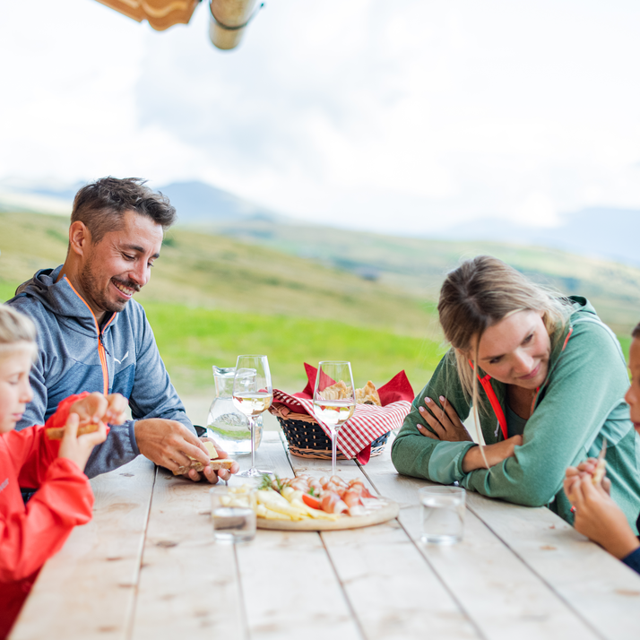

001Aparthotel Familiaris - Family Apartments - Pools & Spa in Dolomites
🇮🇹 Italië · Valdaora (Olang), Dolomieten (Zuid-Tirol)
aparthotel met zwembaden en spa · 👪 tot 4
prijs op aanvraag
Modern 4-sterren aparthotel op een steenworp van de skipistes van Kronplatz, volledig gericht op gezinnen. Er zijn meerdere binnenzwembaden inclusief een babybad, een grote speeltuin met reuzentractor, een indoor zachte speelruimte en zelfs alpaca's op het terrein. De appartementen variëren van studio's tot ruime gezinsappartementen met eigen keuken.
binnenzwembaden + babybadspeeltuinindoor zachte speelruimteklim-/bewegingsruimtealpaca's om te bezoeken
Beste periode: winter (wintersport) en zomer
www.olang.com/en/where-to-stay/aparth… ↗